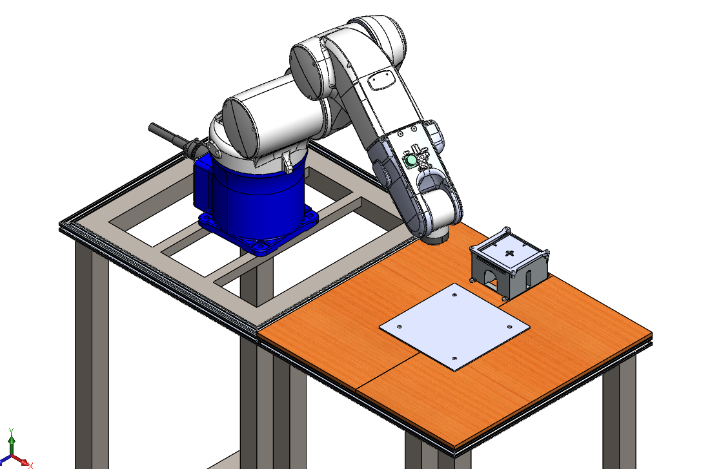
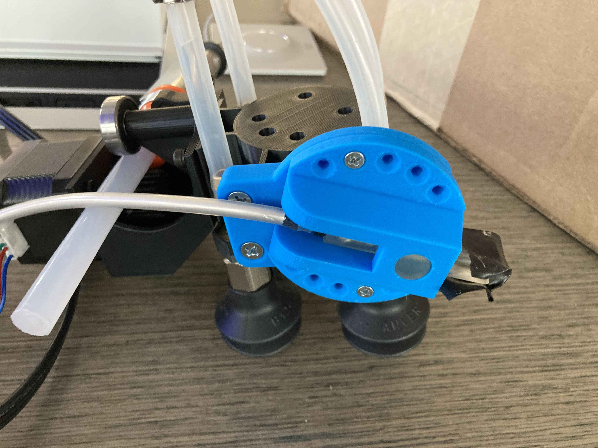

Robotic Assembly of
Photovoltaic Arrays
-

- 
-

- 
-

-

I worked with a team of engineers to produce a modular, scalable, accurate, and autonomous process for building solar arrays utilizing a patent provided by NASA through the NASA Technology Transfer University (T2U) program. The print-assisted photovoltaic assembly (PAPA) patent is an automated process for assembling thin-film solar cells into larger solar arrays using robotic arms. Our process is broken down into four steps: placing a substrate onto a heated bed, applying adhesive to the substrate, printing the interconnects to connect the cells, and placing the solar cells using a vacuum tool.
Our team, Apollo Printing, comprised two mechanical engineers, two computer science engineers, and one electrical engineer. We aimed to leverage the PAPA patent to develop a robotic arm capable of efficiently assembling solar cells into fully functional panels. Our mechanical engineers focused on designing three specialized end effectors: a suction end for handling various components, a nozzle for dispensing adhesives, and a nozzle for printing silver paste to create the panel’s circuitry. While the previous team had successfully developed the suction end effector, our group tackled the challenge of designing the other two from scratch.
In my role, I taught myself the manual operation of the robotic arm and developed automated programs using the Wincaps III software, despite its limited documentation. Additionally, I learned how to program a Raspberry Pi, which was essential for controlling the end effectors. A significant accomplishment was building a server for the Raspberry Pi that facilitated communication to the robotic arm controller via Ethernet. Many technical issues were encountered during this process. Once we had discovered the solution, we were able to help a graduate student who had been attempting to solve the same problem of communication between a robotic controller and Raspberry Pi. This setup allowed for precise control of the end effectors by translating instructions from the controller into end effector commands, ensuring accurate timing and execution.
The robotic arm, a 6-joint system with individual brakes, required careful calibration and movement planning. I manually mapped all of the arm's joint positions to optimize transitions and address challenges such as singularity points. Through meticulous planning and optimization, we achieved our goal of producing a solar panel in under 5 minutes, significantly surpassing our 10-minute target. By the end of the project, our system could produce two functional panels consecutively with no human intervention, demonstrating the effectiveness of our automated assembly process.